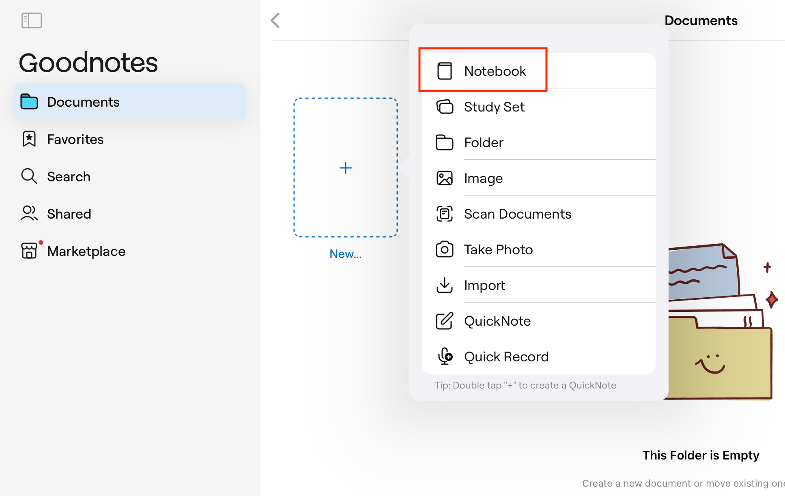
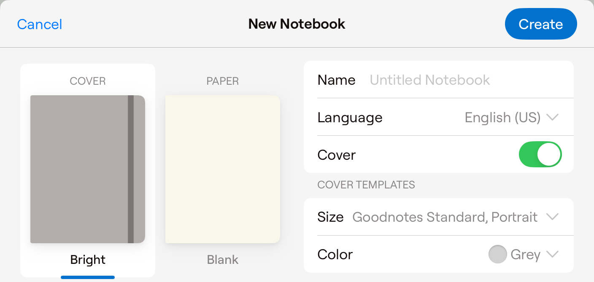
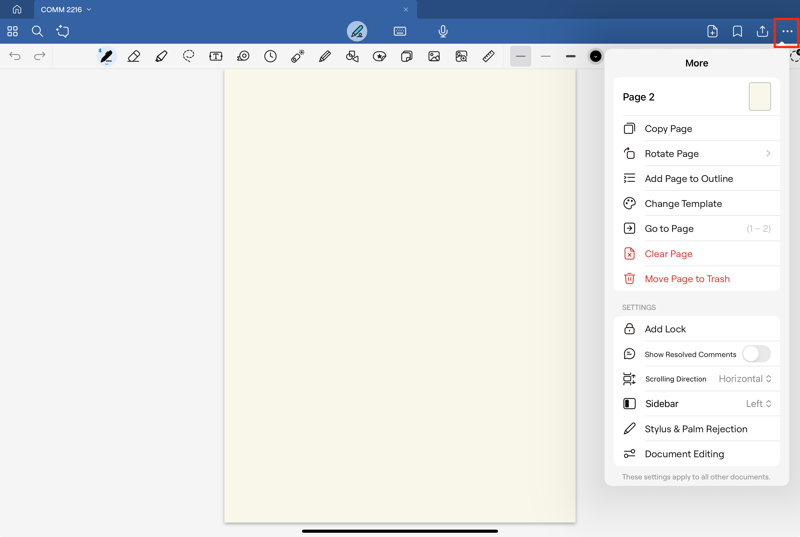

This guide explains how to create a new notebook in GoodNotes 6 and change its cover and page layout. This task is important for anyone starting with digital note-taking.
Launch the App
When you open the GoodNotes 6 app, you'll see an empty Documents page that acts as your home screen. From here, you can begin creating new notebooks and folders in the [Documents] section.
Note
The Documents page is your default starting point. Take a moment to get familiar with its layout before you continue.
Click the [+] Icon

Select the [Notebook] option from the top menu. The app offers several options, like creating a study set, folder, image note, scanned document, quick note, or quick record.
Tip
If you plan to add notes right away, choose the option that best fits your needs.
Configure Notebook Settings

Set up your notebook by adjusting these options:
[Name]: Enter the notebook title.
[Language]: Choose your preferred language.
[Cover Toggle]: Decide whether to include a cover.
Note
Make sure you enter the notebook name correctly, select the right language, and set the cover toggle as you want because these settings may be hard to change later.
Tip
A good cover not only makes your notebook look nice but also helps you keep it organized. Consider creating your own design if the default templates don’t match your taste.
Choose a Cover Design
Pick a cover design from the available templates.
You can also import your own cover designs or visit the marketplace to buy one that suits your style. Each template offers a unique color scheme, and you can choose from different sizes (e.g., A4 or Letter).
Tip
A good cover not only makes your notebook look nice but also helps you keep it organized. Consider creating your own design if the default templates don’t match your taste.
Select a Paper Template
Choose a layout for your notebook pages. Options include essentials, lined paper, music sheets, and planners.
Note
The paper template you choose will affect the look and use of your pages, so pick one that suits your purpose.
Save the NotebookExample: Notebook Name – COMM 2216
Click the [Create] button to save your new notebook.
Success
Your new notebook has been created successfully! Review all settings carefully before saving to ensure everything is correct.
Make your notebook more personal by adjusting settings like scrolling direction, toolbar layout, palm rejection for the stylus, and sensitivity.
Access Additional Options

Click the [...] icon to see extra customization settings. This menu shows options such as current page info, rotation, and template changes.
Note
Exploring these extra options can help you tailor your notebook to your liking.
Tip
Left-handed users should adjust the writing posture for a more comfortable experience.
Warning
Incorrect posture settings may cause recognition errors, so your handwriting might not display correctly.
Select Document Editing Options
Scroll down to [Settings] and choose [Document Editing].
Turn the options on or off based on your needs.
 When you open the GoodNotes 6 app, you'll see an empty Documents page that acts as your home screen. From here, you can begin creating new notebooks and folders in the [Documents] section.
When you open the GoodNotes 6 app, you'll see an empty Documents page that acts as your home screen. From here, you can begin creating new notebooks and folders in the [Documents] section.